The diffuse and specular components can be specified by a (solid) color and/or a texture map
(represented as an image). If both are applied, their values are multiplied. For example:
Color#LIMEGREEN *
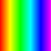 =
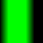
Color#CYAN *
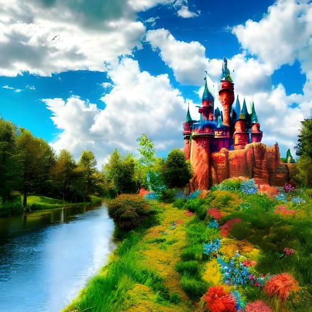 =
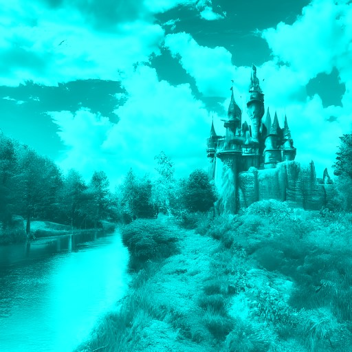
Note: the self-illumination component can not currently be specified as a color. However, a color behaves like a map (of any size) of a single color. Creating a 1x1 pixel map of that color will have the same effect.
PhongMaterial is not suitable for surfaces that act like mirrors and reflect their environment, such as
reflective metals, water, and reflective ceramics. Neither does light refract (bend) when passing through transparent
or translucent materials such as water, glass, or ice. These materials rely on Fresnel effects that are not
implemented for this material.
Components
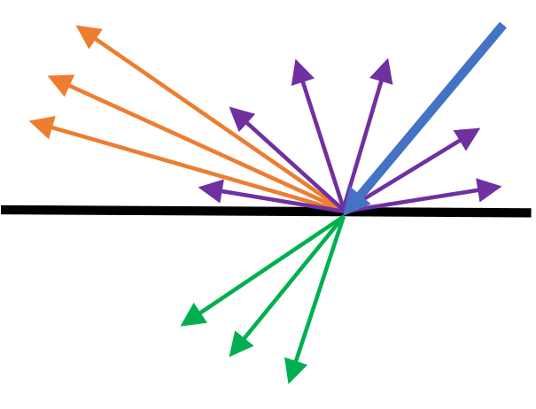 While in the physical world each light ray goes through a single path of reflection, transmission, or absorption, in the computational world a number of adjacent rays are averaged into a single one that can split into multiple paths. This approximation simplifies the computation model greatly while still allowing realistic rendering. The validity of this approximation depends on microscopic details of the material, but it holds well for the vast majority of cases. When an averaged incident ray (blue) hits the surface, it can split into many rays depending on the values of the components of the material: rays that are either transmitted through the material (green) or reflected in all directions via scattering (purple) depend on the diffuse component; rays that are reflected (orange), which depend on the incident angle, are controlled by the specular component.| 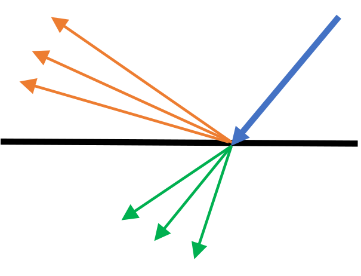 | 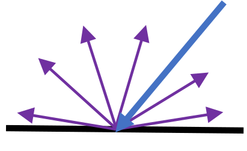 | 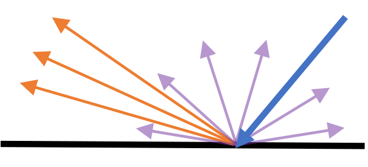 |
| Transparent | Lambertian | Reflective |
Materials whose diffuse component allows only transmitted rays are transparent. These still have a specular component, otherwise they will be invisible (no such material exists). Materials without a specular component and whose diffuse component allows only reflected rays exhibit Lambertian reflectance. Lambertian materials reflect light in all directions equally. Materials with a specular component and a diffuse component that only allows weak reflectance are reflective.
Diffuse
The diffuse component, sometimes called albedo, serves as the base color of the surface. It represents light that is not reflected directly from the surface and instead enters the material.The alpha channel of the diffuse component controls the light that passes through it (transmitted). Decreasing the alpha value increases the transparency of the material and causes the object to appear translucent, and ultimately makes it transparent. Materials such as glass and plastics can be simulated with a low alpha value.
Light that isn't transmitted undergoes subsurface scattering that causes it to be absorbed in the material or be reflected back to the surface, exiting in (approximately) all directions (irrespective of the incident angle). The RGB channels of the diffuse component controls which colors are absorbed and which are reflected, giving the material its base color. The higher one of the RGB values is, the more that material reflects that color.
The diffuse component interacts with all lights - both those that have directionality and AmbientLight, which
simulates a light that comes from all directions.
Important: there is currently a bug that causes objects with 0 opacity to not render at all (despite having a specular or a self-illumination component). Setting the opacity to 1/255 instead will give the desirable result.
Specular
The specular component represents light that is reflected directly from the surface. For most materials, the color of the specular component is on the gray scale regardless of the diffuse component's color. This means that the specular highlight will be the light's color and not the material's color. These materials are sometimes called dielectrics. Metals, on the other hand, reflect a color similar to their diffuse color (like yellow for gold or reddish for copper) and get most of their appearance from the specular color. These materials are sometimes called conductors.The spread of the surface-reflected rays simulates the microgeometry that causes adjacent beams to be reflected in different directions. Smooth surfaces' microgeometry varies little, causing them to have a strong specular component that results in a glossy look, such as plastics, finished wood, and polished metals. Conversely, rough surfaces have a varying microgeometry, weak specular component, and a matte look, such as unfinished wood, fabric, and cardboard. This spread is controlled by the specular power, sometimes called smoothness or, conversely, roughness. A larger specular power simulates a smoother object, which results in a smaller reflection.
The specular component interacts only with lights that have directionality (not AmbientLight) as it depends
on the incident ray direction, and also on the viewer (camera) position since it depends on the reflectance direction.
The alpha component of the specular color is not used at this time.
Self-Illumination
The self-illumination component, also called emissive, represents light emitted by the object. It does not interact with light sources and as such the viewer position does not matter. Specifying this component does not cause the object to serve as a light source - a light has to be added at the position of the object with a color that matches this color. If a multi-colored map is used, several lights of matching colors can be positioned appropriately in the object's volume to give a realistic appearance.The alpha component of the self-illumination color is not used at this time.
Bump
The bump component gives the illusion of small height changes on the surface, like bumps and ridges. It is a normal map (not a height map or a displacement map), which works by modifying the normals of surfaces on the object, causing light to interact differently with the surface than it would have without it. Tree trunks and rough stones can be simulated with a bump map.Bump maps are less expensive than changing a mesh by subdividing a surface into many polygons facing different ways. If the physical geometry of the surface is not important (for example, for intersection calculations), it's advised to use a bump map.
The alpha component of the bump map is not used at this time.
Mathematical Model
L - the vector from the surface to the light source;
N - the normal vector of the surface;
V - the vector from the surface to the viewer (camera);
R - the reflection vector of L from the surface. R can be calculated from L and N: R=2(L⋅N)N - L.
The diffuse and specular components are comprised of 3 factors: the geometry, the light's color, and the material's
color, each considered at every point on the surface. The light's color computation is described in LightBase
(and its subclasses). The material's color computation, as described above, is the multiplication of the color and
map properties. These factors are multiplied to get the final color.
Bump
The default normal vector of a point on the polygon is N=(0, 0, 1) (facing away from the surface). If a bump map is specified, this vector will have a different value based on the RGB values in the bump map: N=2 * RGB - 1. The default value for a bump map (corresponding to the default normal) is RGB=(0.5, 0.5, 1), which is why bump maps tend to be blueish.We will treat N as the normal vector after applying a bump map, if available.
Diffuse
The diffuse component represents light scattered from the surface in all directions, hence, it depends on the interaction between the light and the surface (and independent of the viewer position): L⋅N. L⋅N is the geometric factor of the diffuse component. It moderates the intensity of the color resulting from the light hitting the surface at different angles. If the light ray is parallel to the surface, L⋅N=0 and the diffuse contribution of the light will be 0; if the light ray is perpendicular to the surface (coincides with the normal vector), L⋅N=1 and no reduction in intensity occurs.
Defining the light's color as CL, and the material's diffuse color as CDM, we
multiply the 3 factors described above: L⋅N * CL * CDM. For i lights illuminating
the surface, the contribution of each light is summed:
Σi(Li⋅N * CLi * CDM)
= Σi(Li⋅N * CLi) * CDM
(since CDM is a property of the material and is the same for all lights).
Since AmbientLight simulates a light coming from and scattered in all directions, it contributes fully to the
diffuse component (L⋅N=1). We will define all the ambient lights' contribution as
A=Σi(CLi) and all the other lights' (that have a light vector) as
D=Σi(Li⋅N * CLi). The total diffuse component contribution is then
(A+D) * CDM.
Specular
The specular component represents light reflected from the surface in a mirror-like reflection, hence, it depends on the interaction between the reflected light and the viewer position: R⋅V. As similarly explained in the diffuse component section, the geometric contribution is strongest when the viewer is aligned with the reflection vector and is non-existent when they are perpendicular.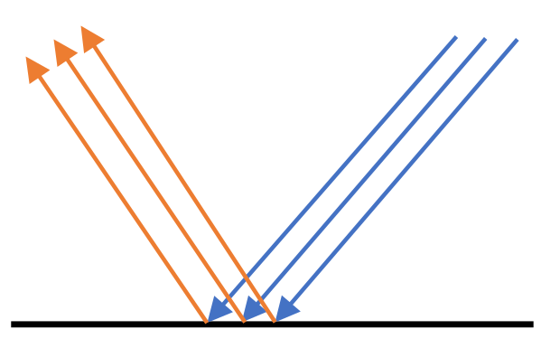 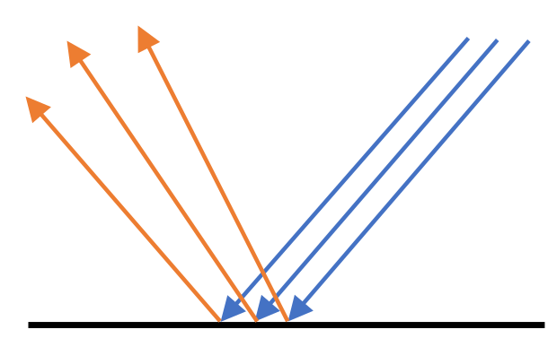 The specular power, P, represents the smoothness of the surface. Smoother surfaces have more narrow reflections and their specular power is smaller (right image), while rougher surfaces have more dispersed reflections and their specular power is larger (left image). Since 0≤R⋅V≤1, the term (R⋅V)P decreases as P increases, giving a smaller contribution.
Like with the diffuse component, the resulting specular color is computed by multiplying the geometric factor, the
light's color, and the material's specular color, CSM, for each light:
Σi((Ri⋅V)P * CLi) * CSM,
and defining the specular lights' contribution as
S=Σi((Ri⋅V)P * CLi),
the total specular component contribution is S * CSM.
Self-Illumination
The self-illumination component represents light emanating from the surface, hence, it is not affected by lights, the geometry, or the viewer position. Its contribution is just the material's self-illumination color, CLM.Summary
The final color at the point of the computation is then: (A+D) * CDM + S * CSM + CLM.Examples
This section shows examples for simulating various common materials. Each image will be accompanied by the values used for the material. Values that aren't specified are the default ones.Gloss
The specular power controls the size of specular highlights, which changes the gloss or smoothness look. Lower powers create larger highlights and vice versa. Some plastics and marble exhibit this behavior, as shown here with 2 billiard balls:| Image | 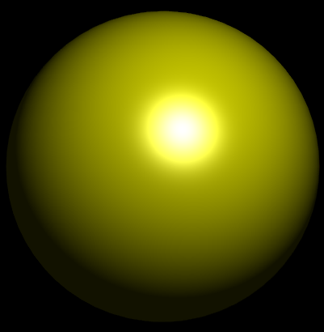 | 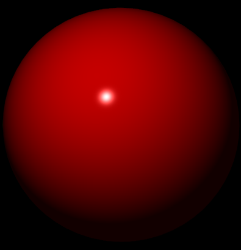 |
| Diffuse color | Color.YELLOW.darker() |
Color.RED.darker() |
| Specular color | Color.WHITE |
Color.WHITE |
| Specular power | 10 | 150 |
Transparency
Some materials are transparent/translucent, allowing most of the light through, like glass and plastics. This is achieved with low diffuse opacity (alpha) values. Tint can be achieved with small RGB values in addition. The smoothness of these materials also means a specular component is present with strength that depends on the finish/polish of the material. A high brightness specular color gives a more glossy look and a low brightness one gives a more matte look.| Image | 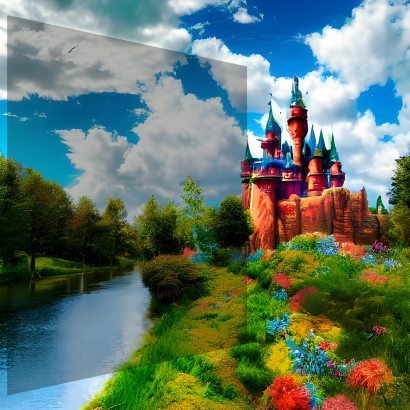 | 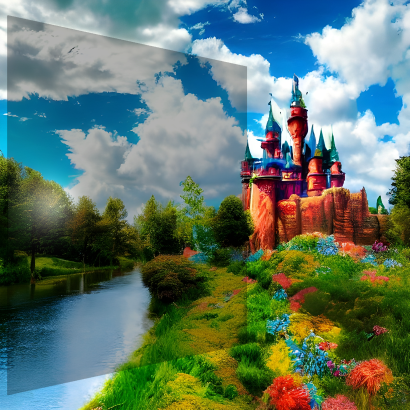 | 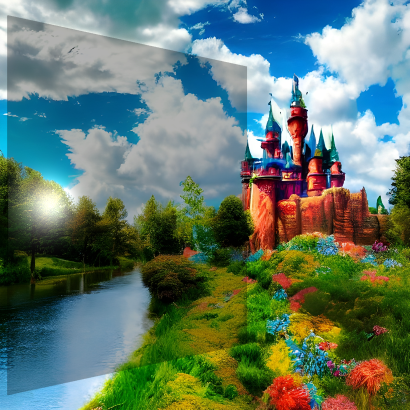 | 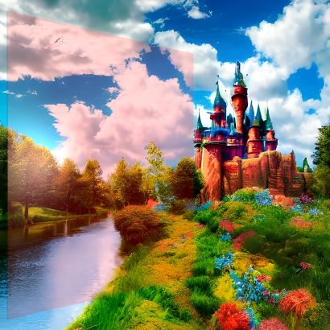 |
| Diffuse color | Color.rgb(0, 0, 0, 0.3) |
Color.rgb(0, 0, 0, 0.3) |
Color.rgb(0, 0, 0, 0.3) |
Color.rgb(75, 0, 0, 0.15) |
| Specular color | Color.hsb(0, 0, 0) |
Color.hsb(0, 0, 45) |
Color.hsb(0, 0, 90) |
Color.hsb(0, 0, 45) |
Specular Color
Metals reflect their own color rather than the light's full color. In this case, the specular color should be similar to the diffuse color, with its brightness affecting the shininess/polish levels. Copper and gold are shown here.| Image | 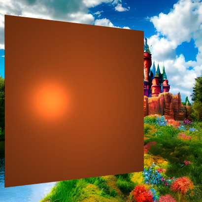 | 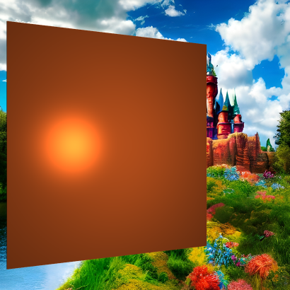 | 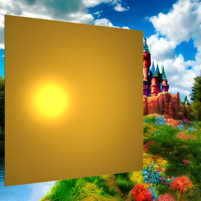 | ||
| Diffuse color | Color.hsb(20, 85, 70) |
Color.hsb(20, 85, 70) |
Color.hsb(20, 85, 70) |
Color.hsb(41, 82, 92) |
Color.hsb(41, 82, 92) |
| Specular color | Color.hsb(20, 85, 40) |
Color.hsb(20, 85, 70) |
Color.hsb(20, 85, 100) |
Color.hsb(41, 82, 30) |
Color.hsb(41, 82, 92) |
Maps and Surface Detail
The specular and bump maps can provide surface details that make the object look more realistic. A tree trunk, which has none-to-low specularity, has a lot of grooves that can be emphasized with a bump map:| 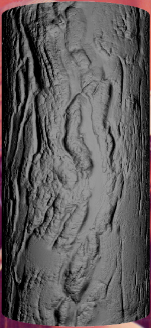 | 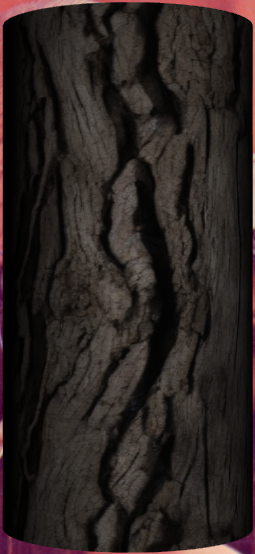 | 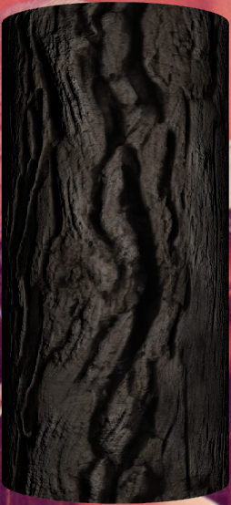 |
| Bump | Diffuse | Bump+Diffuse |
HSB=(0, 0, 60) has been used to darken the wood.
Polished wood, like that used in housing, has a strong specular component due to the finish and buff. A combination of a specular and a bump map highlights the details in the wood:
| 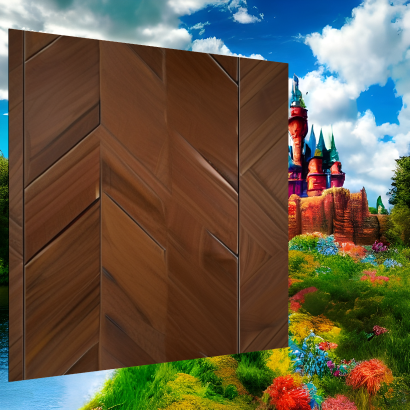 | 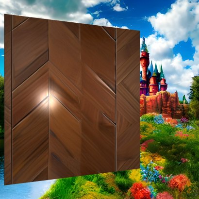 | 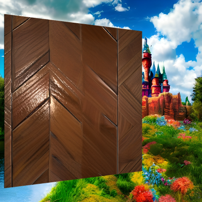 | |
| Diffuse | Diffuse+Specular | Diffuse+Bump | Diffuse+Specular+Bump |
Texture Animation
Texture animation and runtime effects can be achieved in different ways. Firstly, an animated GIF can be used as theImage for texture maps, as demonstrated here when used as a diffuse map: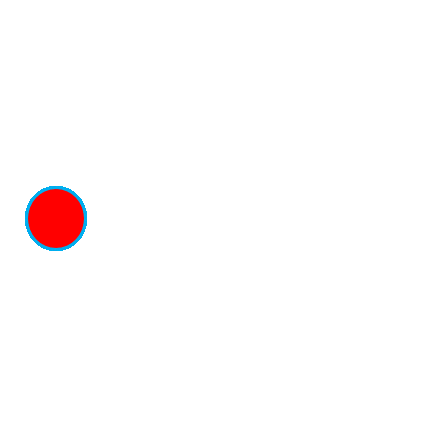 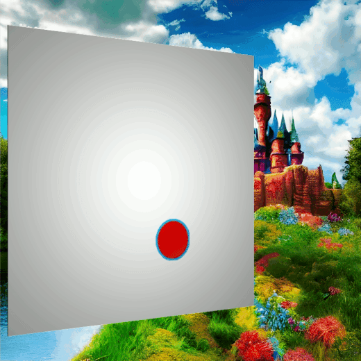
Secondly, by using a WritableImage, the pixel values can be changed programmatically, creating a live texture
as demonstrated for the diffuse map by this code snippet that repaints the image left to right and top to bottom:
WritableImage diffuseMap = ...
material.setDiffuseMap(diffuseMap);
var timer = new AnimationTimer() {
int x, y;
@Override
public void handle(long now) {
diffuseMap.getPixelWriter().setColor(x, y, Color.color(0, 0, 1, 0.5));
x++;
if (x > diffuseMap.getWidth() - 1) {
x = 0;
y++;
if (y > diffuseMap.getHeight() - 1) {
stop();
}
}
}
};
timer.start();
Another way to animate textures is done through changing the
texture coordinates
of the mesh, the explanation for which is out of scope for this class.- Since:
- JavaFX 8.0
- See Also:
-
Property Summary
PropertiesTypePropertyDescriptionfinal ObjectProperty<Image> The bump map of thisPhongMaterial, which is a normal map stored as an RGB image.final ObjectProperty<Color> The diffuse color of thisPhongMaterial.final ObjectProperty<Image> The diffuse map of thisPhongMaterial.final ObjectProperty<Image> The self illumination map of thisPhongMaterial.final ObjectProperty<Color> The specular color of thisPhongMaterial.final ObjectProperty<Image> The specular map of thisPhongMaterial.final DoublePropertyThe specular power of thisPhongMaterial. -
Constructor Summary
ConstructorsConstructorDescriptionCreates a new instance ofPhongMaterialclass with a defaultColor.WHITE diffuseColorproperty.PhongMaterial(Color diffuseColor) Creates a new instance ofPhongMaterialclass using the specified color for itsdiffuseColorproperty.PhongMaterial(Color diffuseColor, Image diffuseMap, Image specularMap, Image bumpMap, Image selfIlluminationMap) Creates a new instance ofPhongMaterialclass using the specified colors and images for itsdiffuseColorproperties. -
Method Summary
Modifier and TypeMethodDescriptionfinal ObjectProperty<Image> The bump map of thisPhongMaterial, which is a normal map stored as an RGB image.final ObjectProperty<Color> The diffuse color of thisPhongMaterial.final ObjectProperty<Image> The diffuse map of thisPhongMaterial.final ImageGets the value of thebumpMapproperty.final ColorGets the value of thediffuseColorproperty.final ImageGets the value of thediffuseMapproperty.final ImageGets the value of theselfIlluminationMapproperty.final ColorGets the value of thespecularColorproperty.final ImageGets the value of thespecularMapproperty.final doubleGets the value of thespecularPowerproperty.final ObjectProperty<Image> The self illumination map of thisPhongMaterial.final voidsetBumpMap(Image value) Sets the value of thebumpMapproperty.final voidsetDiffuseColor(Color value) Sets the value of thediffuseColorproperty.final voidsetDiffuseMap(Image value) Sets the value of thediffuseMapproperty.final voidsetSelfIlluminationMap(Image value) Sets the value of theselfIlluminationMapproperty.final voidsetSpecularColor(Color value) Sets the value of thespecularColorproperty.final voidsetSpecularMap(Image value) Sets the value of thespecularMapproperty.final voidsetSpecularPower(double value) Sets the value of thespecularPowerproperty.final ObjectProperty<Color> The specular color of thisPhongMaterial.final ObjectProperty<Image> The specular map of thisPhongMaterial.final DoublePropertyThe specular power of thisPhongMaterial.
-
Property Details
-
diffuseColor
The diffuse color of thisPhongMaterial.- Default value:
Color.WHITE- See Also:
-
specularColor
The specular color of thisPhongMaterial.- Default value:
null- See Also:
-
specularPower
The specular power of thisPhongMaterial.- Default value:
- 32.0
- See Also:
-
diffuseMap
The diffuse map of thisPhongMaterial.- Default value:
null- See Also:
-
specularMap
The specular map of thisPhongMaterial.- Default value:
null- See Also:
-
bumpMap
The bump map of thisPhongMaterial, which is a normal map stored as an RGB image.- Default value:
null- See Also:
-
selfIlluminationMap
The self illumination map of thisPhongMaterial.- Default value:
null- See Also:
-
-
Constructor Details
-
PhongMaterial
public PhongMaterial()Creates a new instance ofPhongMaterialclass with a defaultColor.WHITE diffuseColorproperty. -
PhongMaterial
Creates a new instance ofPhongMaterialclass using the specified color for itsdiffuseColorproperty.- Parameters:
diffuseColor- the color of the diffuseColor property
-
PhongMaterial
public PhongMaterial(Color diffuseColor, Image diffuseMap, Image specularMap, Image bumpMap, Image selfIlluminationMap) Creates a new instance ofPhongMaterialclass using the specified colors and images for itsdiffuseColorproperties.- Parameters:
diffuseColor- the color of the diffuseColor propertydiffuseMap- the image of the diffuseMap propertyspecularMap- the image of the specularMap propertybumpMap- the image of the bumpMap propertyselfIlluminationMap- the image of the selfIlluminationMap property
-
-
Method Details
-
setDiffuseColor
Sets the value of thediffuseColorproperty.- Property description:
- The diffuse color of this
PhongMaterial. - Default value:
Color.WHITE- Parameters:
value- the value for thediffuseColorproperty- See Also:
-
getDiffuseColor
Gets the value of thediffuseColorproperty.- Property description:
- The diffuse color of this
PhongMaterial. - Default value:
Color.WHITE- Returns:
- the value of the
diffuseColorproperty - See Also:
-
diffuseColorProperty
The diffuse color of thisPhongMaterial.- Default value:
Color.WHITE- Returns:
- the
diffuseColorproperty - See Also:
-
setSpecularColor
Sets the value of thespecularColorproperty.- Property description:
- The specular color of this
PhongMaterial. - Default value:
null- Parameters:
value- the value for thespecularColorproperty- See Also:
-
getSpecularColor
Gets the value of thespecularColorproperty.- Property description:
- The specular color of this
PhongMaterial. - Default value:
null- Returns:
- the value of the
specularColorproperty - See Also:
-
specularColorProperty
The specular color of thisPhongMaterial.- Default value:
null- Returns:
- the
specularColorproperty - See Also:
-
setSpecularPower
public final void setSpecularPower(double value) Sets the value of thespecularPowerproperty.- Property description:
- The specular power of this
PhongMaterial. - Default value:
- 32.0
- Parameters:
value- the value for thespecularPowerproperty- See Also:
-
getSpecularPower
public final double getSpecularPower()Gets the value of thespecularPowerproperty.- Property description:
- The specular power of this
PhongMaterial. - Default value:
- 32.0
- Returns:
- the value of the
specularPowerproperty - See Also:
-
specularPowerProperty
The specular power of thisPhongMaterial.- Default value:
- 32.0
- Returns:
- the
specularPowerproperty - See Also:
-
setDiffuseMap
Sets the value of thediffuseMapproperty.- Property description:
- The diffuse map of this
PhongMaterial. - Default value:
null- Parameters:
value- the value for thediffuseMapproperty- See Also:
-
getDiffuseMap
Gets the value of thediffuseMapproperty.- Property description:
- The diffuse map of this
PhongMaterial. - Default value:
null- Returns:
- the value of the
diffuseMapproperty - See Also:
-
diffuseMapProperty
The diffuse map of thisPhongMaterial.- Default value:
null- Returns:
- the
diffuseMapproperty - See Also:
-
setSpecularMap
Sets the value of thespecularMapproperty.- Property description:
- The specular map of this
PhongMaterial. - Default value:
null- Parameters:
value- the value for thespecularMapproperty- See Also:
-
getSpecularMap
Gets the value of thespecularMapproperty.- Property description:
- The specular map of this
PhongMaterial. - Default value:
null- Returns:
- the value of the
specularMapproperty - See Also:
-
specularMapProperty
The specular map of thisPhongMaterial.- Default value:
null- Returns:
- the
specularMapproperty - See Also:
-
setBumpMap
Sets the value of thebumpMapproperty.- Property description:
- The bump map of this
PhongMaterial, which is a normal map stored as an RGB image. - Default value:
null- Parameters:
value- the value for thebumpMapproperty- See Also:
-
getBumpMap
Gets the value of thebumpMapproperty.- Property description:
- The bump map of this
PhongMaterial, which is a normal map stored as an RGB image. - Default value:
null- Returns:
- the value of the
bumpMapproperty - See Also:
-
bumpMapProperty
The bump map of thisPhongMaterial, which is a normal map stored as an RGB image.- Default value:
null- Returns:
- the
bumpMapproperty - See Also:
-
setSelfIlluminationMap
Sets the value of theselfIlluminationMapproperty.- Property description:
- The self illumination map of this
PhongMaterial. - Default value:
null- Parameters:
value- the value for theselfIlluminationMapproperty- See Also:
-
getSelfIlluminationMap
Gets the value of theselfIlluminationMapproperty.- Property description:
- The self illumination map of this
PhongMaterial. - Default value:
null- Returns:
- the value of the
selfIlluminationMapproperty - See Also:
-
selfIlluminationMapProperty
The self illumination map of thisPhongMaterial.- Default value:
null- Returns:
- the
selfIlluminationMapproperty - See Also:
-